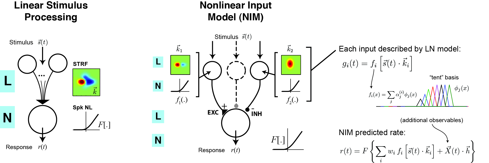

Hosted by the NeuroTheory Lab at University of Maryland
The Nonlinear Input Model (NIM) is a probabilistic model for describing nonlinear computation in sensory neurons. In this model, the predicted firing rate is given as a sum over nonlinear inputs followed by a 'spiking nonlinearity' function (equivalent to an LNLN cascade):

Each nonlinear input is itself specified by a linear stimulus filter, as well as a static 'upstream nonlinearity' that is assumed to be some rectifying function. As a result, the model neuron can be viewed as integrating a set of stimulus-driven inputs that are either excitatory or suppressive. The stimulus filters, and the form of the 'upstream nonlinearities', can be inferred from the data (along with additional linear terms describing e.g. spike-history dependence).
Our paper, which describes parameter estimation procedures in detail and shows a variety of applications, can be downloaded here:
Note that this model can implicitly be used to fit other previously suggested probabilistic models of neural spiking:
We have provided a Matlab toolbox for estimating parameters of the Nonlinear Input Model from spiking data (see links below). In addition to routines for estimating the stimulus filters and upstream nonlinearities associated with each nonlinear input, the toolbox contains functions for estimating parameters of the spiking nonlinearity function, and includes built-in support for modeling spike-history dependence. Likewise, upstream nonlinearities can be fixed to estimate the GLM and GQM. Several different forms of regularization on the stimulus filters and upstream nonlinearities are currently supported, including sparseness (L1 norm) and several forms of smoothness (L2 norm) regularization.
Several example applications of the model to simulated data are currently available for download below, and we plan to add more examples soon.
To install: Once the NIMtoolbox is unzipped, its directory should be added to your Matlab path. This code relies on the Matlab Optimization toolbox, as well as optimization routines provided by Mark Schmidt. Mark Schmidt's L1-optimization routines (L1General) must be installed to use L1-regularization. Additionally, we strongly recommend installing Mark Schmidt's functions minFunc and minConf to take advantage of all regularization possibilities and speed up parameter optimization.
Source Code: NIMtoolbox.zip (last updated Aug 22, 2013)
Example applications (try these first to learn how to use the code):
See the references and help documentation for further details. Please report any bugs to: jmmcfarl at umd dot edu.
Contributed applications of the NIM welcome!
Related Papers: